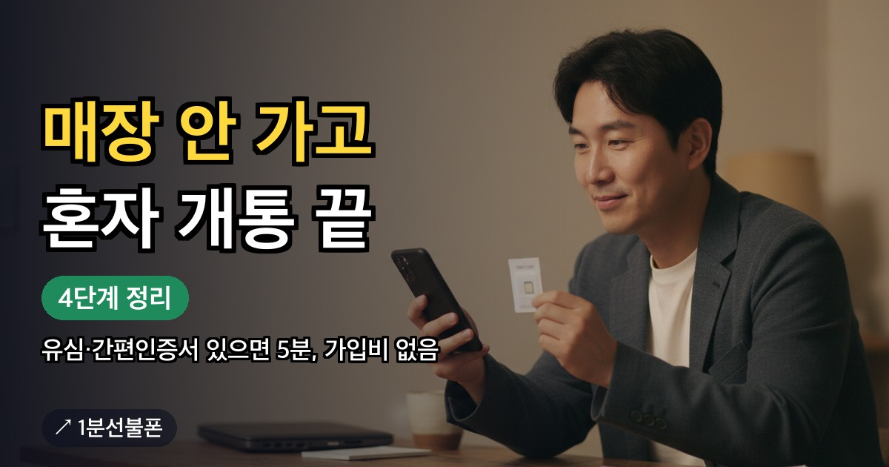

알뜰폰 셀프개통 방법은 앤텔레콤 선불 기준으로 유심과 본인 명의 간편인증서를 준비한 뒤, 웹(앤플랫폼)이나 앱(앤스마트) 가운데 한쪽에서 안면인증·본인인증을 거쳐 직접 신청하는 것입니다. 웹은 마지막에 개통하기를 누르면 끝나고, 앱은 개통신청 뒤 카카오톡 채널 승인요청까지 해야 끝납니다. 처음 해 보는 분이 헷갈리지 않도록 준비물, 길마다의 순서, 두 길의 차이를 차례로 적었습니다.
- 앤텔레콤 선불 셀프개통은 웹(앤플랫폼)과 앱(앤스마트) 두 길, 어느 쪽이든 안면인증과 본인인증을 거침
- 준비물은 망에 맞는 유심과 본인 명의 간편인증서 — 웹은 토스·카카오 등, 앱은 네이버·토스·카카오 등
- 웹은 유심 정보를 넣고 개통하기를 누르면 별도 승인요청 없이 완료, 그날 안에 오는 본사 확인 전화(해피콜)를 받아야 함
- 앱은 태블릿소유자 회원번호 2772872를 넣고 개통신청을 누른 뒤 1분선불폰 카카오톡 채널에 승인요청까지 해야 완료
- 셀프개통 가능 시간은 신규가입 08:00~21:50, 번호이동 10:00~19:50
- 드는 돈은 편의점 유심 6,600~8,800원과 요금제 12,100원부터, 유심이 있으면 5분
알뜰폰 셀프개통, 앤텔레콤 선불에는 길이 두 개 있습니다
알뜰폰은 기존 이동통신사의 통신망을 빌려 서비스하는 통신사를 말하고, 앤텔레콤은 KT망과 LG U+망을 빌려 씁니다. 이 글은 그 가운데 약정 없이 충전해서 쓰는 선불만 다룹니다. 선불과 후불이 어디서 갈리는지는 선불 후불 차이 글에서 먼저 볼 수 있습니다.
셀프개통은 센터에 가지 않고 온라인에서 본인이 직접 개통하는 방식입니다. 앤텔레콤 선불에서는 아래 두 길 가운데 하나를 고릅니다.
- 웹(앤플랫폼) — 앤텔레콤 신청 페이지에서 진행합니다. 마지막에 개통하기를 누르면 따로 승인을 요청하지 않아도 개통이 끝납니다.
- 앱(앤스마트) — 멤버십 앱을 내려받아 진행합니다. 개통신청을 누른 다음 카카오톡 채널로 승인요청을 해야 개통이 끝납니다.
선불은 신용조회 없이 가입하므로 미납·연체·신용불량이어도 본인 명의로 개통할 수 있습니다. 다만 아래에 해당하면 셀프개통 대상이 아니어서 센터 방문 개통으로 가야 합니다.
- 미성년자, 법인
- 다른 통신사에서 번호이동·신규가입·명의변경을 한 지 3개월이 지나지 않은 회선
- 앤텔레콤 번호를 해지한 지 30일이 지나지 않은 경우
- 본인 명의 간편인증서가 없는 경우
셀프개통 화면을 열기 전에 알아 둘 점으로, 외국인은 앤플랫폼(비대면)에서 여권으로 개통할 수 없어 센터 방문 개통입니다.
시작 전에 갖출 것 — 망에 맞는 유심과 본인 명의 간편인증서
두 길 모두 준비물이 갖춰져 있어야 중간에 멈추지 않습니다. 셀프개통에는 신분증을 촬영하거나 올리는 단계가 없고, 그 자리를 본인 명의 간편인증서가 대신합니다.
- 간편인증서 — 웹은 토스·카카오 등, 앱은 네이버·토스·카카오 등을 씁니다. 가족 명의 인증서로는 진행할 수 없습니다.
- 유심 — 앤텔레콤에서 쓸 수 있는 유심이어야 하고, 예전 통신사에서 빼 둔 유심은 재사용이 안 됩니다. 편의점 유심은 6,600~8,800원입니다.
- 가입 유형 — 새 번호를 받으면 신규가입, 쓰던 번호를 그대로 옮기면 번호이동입니다.
- 요금제 — 12,100원부터 있고, 가입비 없음입니다. 목록은 요금제 비교에서 미리 훑어보세요.
유심은 망에 따라 상품과 파는 곳이 다릅니다.
| 망 | 유심 | 포장 색 | 파는 곳 |
|---|---|---|---|
| KT망(K망) | 바로유심 | 민트색 | CU·GS25·이마트24 |
| LG U+망(L망) | 모두의원칩 | 검은색 | 이마트24·B마트·지하철 역 자판기 |
L망 유심은 CU·GS25에서 팔지 않습니다. 가까운 곳에서 구하기 어렵다면 신청 페이지 안에서 택배 배송이나 퀵 배송으로 받을 수 있습니다. 사기 전에 볼 목록은 유심 준비 안내에 있습니다.
웹(앤플랫폼)에서 진행할 때의 다섯 걸음
웹 쪽은 앤텔레콤 신청 페이지에서 진행합니다. 1분선불폰은 순서를 안내하는 곳이고 신청서를 받지 않으니, 신청 화면이 맞는지 가리는 법은 선불폰 개통 사이트 글을 참고하세요.
- 가입 유형 고르기 — 신규가입과 번호이동 가운데 하나를 고릅니다.
- 안면인증과 본인인증 — 얼굴 인식을 통과한 뒤 본인 명의 간편인증서(토스·카카오 등)로 인증합니다.
- 유심 정보 입력 — 가지고 있는 유심의 정보를 넣습니다. 유심이 없으면 이 단계 대신 택배·퀵 배송을 신청해 받은 뒤 이어 갑니다.
- 요금제 선택 — 유심과 같은 망의 요금제를 고릅니다.
- 개통하기 누르기 — 별도의 승인요청 없이 개통이 완료됩니다. 신청 접수와 개통 완료는 다르니 화면과 문자로 결과를 확인하세요.
웹 개통을 마친 날에는 본사 확인 전화(해피콜)가 그날 안에 걸려 옵니다(공휴일 제외). 이 전화를 받지 못하면 번호가 해지될 수 있으니 휴대폰을 가까이 두세요. 요금 충전도 개통한 날 안에 마쳐야 합니다. 화면마다의 자세한 설명은 선불폰 셀프개통 글에 단계별로 있습니다.
앱(앤스마트)에서 진행할 때 — 회원번호 2772872와 승인요청
앱 쪽은 순서가 여섯 단계이고, 마지막 단계가 앱 바깥에 있다는 점이 웹과 다릅니다.
- 멤버십 앱을 내려받습니다.
- 안면인증과 본인인증을 진행합니다. 간편인증서는 네이버·토스·카카오 등을 씁니다.
- 태블릿소유자 회원번호 칸에 2772872를 입력합니다.
- 남은 정보를 입력합니다.
- 마지막에 개통신청을 누릅니다.
- 1분선불폰 카카오톡 채널에 연락해 승인요청을 합니다.
개통신청 버튼을 눌렀다고 개통이 끝난 것이 아닙니다. 여섯 번째 단계인 승인요청을 빠뜨리면 신청만 해 둔 상태로 남으니, 버튼을 누른 뒤 바로 채널에 승인요청을 남기세요. 회원번호 칸에서 멈췄을 때의 설명은 선불폰 앱 개통 글에 따로 있습니다.
웹과 앱, 표로 견주면 갈리는 곳은 네 군데
| 항목 | 웹(앤플랫폼) | 앱(앤스마트) |
|---|---|---|
| 시작하는 곳 | 앤텔레콤 신청 페이지 | 멤버십 앱을 내려받아 실행 |
| 안면인증·본인인증 | 거침 | 거침 |
| 간편인증서 | 토스·카카오 등 | 네이버·토스·카카오 등 |
| 눈여겨볼 입력 칸 | 가지고 있는 유심의 정보 | 태블릿소유자 회원번호 2772872 |
| 마지막 버튼 | 개통하기 | 개통신청 |
| 버튼을 누른 뒤 | 별도 승인요청 없이 개통 완료, 그날 안에 오는 본사 확인 전화(해피콜) 받기 | 1분선불폰 카카오톡 채널에 승인요청을 해야 개통 완료 |
어느 쪽이 더 낫다고 정해진 것은 없습니다. 고를 때는 아래 두 가지만 보면 됩니다.
- 가진 간편인증서가 어느 쪽 안내에 들어 있는지
- 버튼을 누른 뒤 할 일(웹은 확인 전화 받기, 앱은 승인요청 남기기) 가운데 어느 쪽이 내게 수월한지
두 길 모두 유심이 있으면 5분이면 신청 단계를 마칠 수 있습니다.
처음 하는 사람이 자주 멈추는 세 곳
- 얼굴 인식 — 2026년 10월부터는 안면인증을 반드시 통과해야 개통할 수 있습니다. 형광등 빛이 얼굴이나 화면에 반사되지 않는 자리에서 하고, 고개를 돌리라는 안내가 나오면 눈도 고개가 가는 쪽으로 같이 돌리세요. 고개만 돌린 채 화면을 계속 보면 인식률이 떨어집니다.
- 진행 가능 시간 — 셀프개통은 신규가입 08:00~21:50, 번호이동 10:00~19:50에 할 수 있습니다. 번호이동은 일요일과 신정·설·추석 당일에는 되지 않고, 그날 시간 안에 끝내지 못하면 다음 날 처음부터 다시 해야 합니다.
- 번호이동 인증 — 인증은 하루 7회까지이고, 넘기면 그날은 번호이동을 할 수 없어 다음 날 다시 시도합니다.
간편인증서가 없거나 얼굴 인식이 계속 막히면 셀프개통을 붙잡고 있기보다 센터 찾기에서 방문 개통을 예약하는 편이 빠릅니다. 센터에는 실물 신분증을 가져가고, 온라인과 방문의 준비물 차이는 개통 방법 안내에 정리돼 있습니다.
자주 묻는 질문
알뜰폰 셀프개통은 웹이랑 앱 중에 어느 쪽이 단계가 적나요?
웹(앤플랫폼)은 유심 정보를 넣고 개통하기를 누르면 별도 승인요청 없이 개통이 끝납니다. 앱(앤스마트)은 회원번호 입력과 개통신청 뒤에 1분선불폰 카카오톡 채널 승인요청이 한 단계 더 있습니다. 대신 웹은 개통한 날 안에 오는 본사 확인 전화(해피콜)를 받아야 합니다.
앱에서 태블릿소유자 회원번호를 넣으라는데 뭘 적어야 하나요?
2772872를 입력합니다. 그 뒤 남은 정보를 채우고 개통신청을 누른 다음, 1분선불폰 카카오톡 채널에 승인요청까지 해야 개통이 완료됩니다.
간편인증서가 네이버 것만 있는데 셀프개통이 되나요?
안내된 기준으로 네이버 간편인증서는 앱(앤스마트) 쪽에 들어 있습니다. 앱은 네이버·토스·카카오 등, 웹은 토스·카카오 등으로 안내하고 있으니 네이버 인증서만 있다면 앱 쪽 순서를 먼저 보세요. 인증서는 본인 명의여야 합니다.
편의점에서 아무 유심이나 사서 셀프개통해도 되나요?
안 됩니다. 앤텔레콤에서 쓸 수 있는 유심이어야 합니다. KT망은 민트색 바로유심(CU·GS25·이마트24), LG U+망은 검은색 모두의원칩(이마트24·B마트·지하철 역 자판기)이고, 고를 요금제와 같은 망의 유심을 사야 합니다. 값은 6,600~8,800원입니다.
알뜰폰 셀프개통은 저녁 몇 시까지 받아 주나요?
신규가입은 08:00~21:50, 번호이동은 10:00~19:50입니다. 번호이동은 일요일과 신정·설·추석 당일에는 할 수 없습니다. 시간 안에 마치지 못하면 다음 날 새로 진행해야 하니 여유를 두고 시작하세요.
셀프개통을 못 하는 사람은 어떤 경우인가요?
미성년자, 법인, 다른 통신사에서 번호이동·신규가입·명의변경을 한 지 3개월이 안 된 회선, 앤텔레콤 번호를 해지한 지 30일이 안 된 경우는 센터에 방문해 개통합니다. 본인 명의 간편인증서가 없는 경우도 센터 방문으로 진행합니다.
같이 보면 좋은 글

선불폰 셀프개통 — 신청 페이지에서 개통하기까지 단계별 정리
선불폰 셀프개통은 매장 직원의 도움 없이 내가 직접 앤텔레콤 신청 페이지에서 회선을 여는 방식입니다…
선불폰 셀프개통 시간 — 가입 유형별 가능 시간과 안 되는 날 정리
선불폰 셀프개통은 밤낮없이 열려 있는 서비스가 아닙니다. 앤텔레콤 안내 기준으로 신규가입은…
인터넷 유심 신청 — 편의점에 없을 때 선불유심 받는 두 가지 길
집 근처 편의점에 원하는 유심이 없거나 매장까지 나가기 어렵다면, 유심을 인터넷으로 신청해 받는 길이…

자급제 핸드폰 개통 — 선불 유심 끼우는 순서와 번호 등록 팝업이 안 뜰 때
자급제 핸드폰 개통은 앤텔레콤 선불 유심을 구해 신청 페이지에서 개통을 마친 다음 그 유심을 폰에 끼우면…
최종 업데이트: